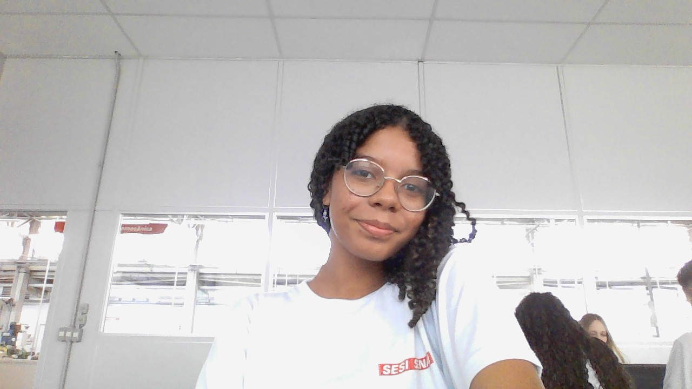

Maria Rita Gomes
.Sobre mim:
Meu nome é Maria Rita, tenho 15(quinze) anos, nasci e ainda moro na cidade de Campinas e estou cursando DS (desenvolvimento de sistema) no SENAI e o 2º (segundo) ano do ensino médio na escola SESI Valinhos. Futuramente pretendo cursar criminologia ou artes, que são áreas que mais me identifico.
.Meus Hobbies
.Dança:
Eu começei na dança com dois anos, e desde então, nunca mais parei. Atualmente danço em um grupo avançado e participo de competições de dança no estilo hip hop. Pretendo continuar nesse mundo artístico e talvez transforma-lo em algo mais sério.

Imagem minha no SENAI